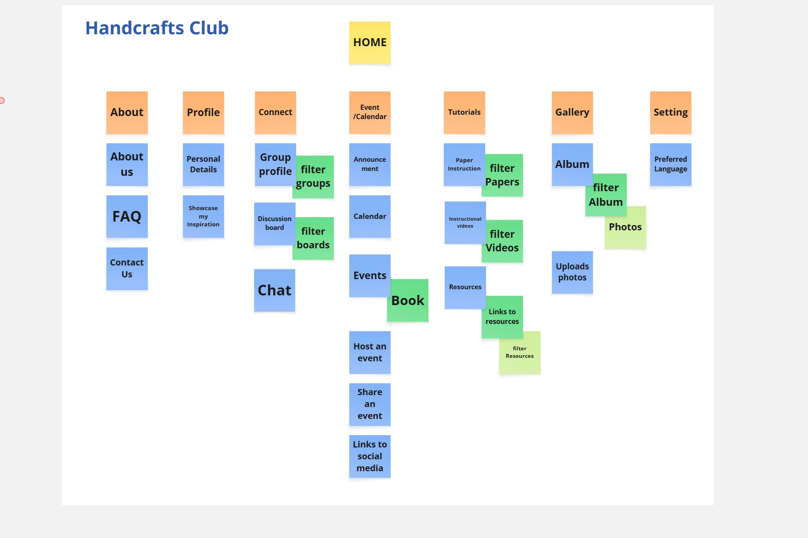

Site Map.
This is the website created by the Card Sort exercise

🏡HOME🏡
The homepage features an inspiring handcraft picture at the top of the page under the menu bar to attract users and guide them to explore the website. The page includes images of various handcrafts such as knitting, crochet, and embroidery, with interactive buttons, including slider arrows on the images with a hover effect. Additionally, there is an action button, such as 'Join Now,' centered around the image. This layout supports easy navigation for users to explore different handcraft-related activities and encourages further exploration. To ensure accessibility, the color scheme provides high contrast between the background and text for better readability. The wording is kept short, universal, and easy to understand for non-native speakers.
The About page introduces and explains the platform's mission to users. It highlights the values and demonstrates how it connects people based on shared hobbies. The goal is to help users understand what the website stands for and decide if it aligns with their interests and needs. The page includes images of knitting, crochet, and embroidery at the top,below the menu bar, followed by detailed content. In the details, the words "knitting," "crochet," and "embroidery" are clickable and link to the group pages. At the bottom, there are clickable links to the FAQ and Contact Us sections with a hover effect and underlined text. These support users by making it easy for them to understand and feel more connected to the platform. To ensure accessibility, the color scheme provides high contrast between the background and text. Simple language is used to accommodate both native and non-native English speakers. Additionally, clear headings and easily scannable content ensure that users can quickly find the information they need.
A section provides an explanation of the platform's mission to users. It highlights the platform's values and demonstrates how it connects people based on shared hobbies with a logical content structure. The background is white, and the text is black. In the details, the words "knitting", "crochet", and "embroidery" are highlighted in blue, clickable, and link to the respective group pages. There is space between the lines to ensure readability. Additionally, clear headings and easily scannable content ensure that users can quickly find the information they need. At the bottom, clickable links to the FAQ and Contact Us sections are provided, with a hover effect and underlined text.
The FAQ section addresses common questions and concerns users may have, offering easy-to-understand answers. It contains clearly defined headings for each question, and each question is answered directly with simple, straightforward text. This helps users understand how to navigate the website effectively, boosting their confidence in using the platform. To support accessibility, the FAQ section uses a high-contrast color scheme for readability, with black text and a white background. The content is logically organized, and the headings are clearly visible
The simple contact template is designed for users who may have questions, feedback, or need support. It includes fields for Name, Email, Subject, and Message, as well as a submit button. The form is designed with clear instructions and labels for each field. The clickable call-to-action button is prominently displayed, guiding users through the process of submitting their message, with a hover effect. This feature supports users who need local assistance and empowers them to reach out. To support accessibility, the form uses a high-contrast color scheme between the background and text for readability, with black text on a white background.
The profile page serves as a central hub for each user to manage their personal information, interests, and activity within the community. This will be linked to the group profile, and users can interact with other profiles and receive recommendations based on shared interests. Users can share their experiences, including pictures in the "Showcase my inspiration" section. To support the client’s goal of a sense of belonging, social connection, and self-expression within the platform, it allows users to personalize their experience and directly connect with others who share similar interests. This page will use high-contrast text and background colors to ensure accessibility.
This section allows users to manage and update their personal information, such as their profile photo, name, contact details, and preferences. Users can edit or add personal information to enhance their experience, including privacy settings such as they can choose showing some personal information. They can also link to the groups they are interested in. To support user needs, they can choose and connect with others who share similar interests and join specific groups or activities. This page also includes links to other social media platforms they have created, as well as other pages such as the group page and resources, with clickable text links that have a hover effect. To ensure accessibility, this section will have clearly labeled fields and high-contrast text and background for readability. The text uses short, easy-to-understand words.
This page is to allow users to showcase their work and creative inspiration with the community by sharing and build connections with others who have similar interests in handcrafts which they like. Users can upload and display images or videos of their handcraft projects, such as knitting, crochet, or embroidery and choose their topic with the filter function like accordion. It include a like button or comment section to encourage interaction and feedback from other community members. To support the client, this elps users feel valued and recognized by showcasing their work, fulfilling the need for social interaction and self-expression. It also provides an opportunity for users to learn from each other and be inspired by others' creativity. For accessibility considerations, the images and videos will have clear, accessible captions, and the like/comment buttons will be easy to navigate using keyboard shortcuts. The design will ensure that the content is visible and easily readable, with text that is clear and contrasts well with the background.
The Connect page provides a group profile, discussion board, and chat box where users can connect with others. At the top of the page, there will be an image representing the bond of the community, with the word "Connect" centered around the image. Below the image, an introduction is provided, followed by three clickable group activity images, each linking to the specific group page. Underneath the clickable pictures, there is a discussion board with a filter option that allows users to select the group they want to engage with, by choosing from a dropdown or selection of topics. The filter enables users to narrow down discussions by category, activity type, or interest. Below the discussion board, there is a chat box for real-time communication. This page supports the user's needs, such as fostering a sense of belonging, inclusiveness, promoting unique activities, collaboration, and empowering them to build confidence through interaction on the community group page. The page features a white background with black text to enhance accessibility, and clear, simple language is used for ease of understanding.
The central hub for various activities, including Crochet, Knitting, and Embroidery, which can be filtered by group name through clickable images or buttons. It provides a space for users to create, manage, engage, and interact with each other through posts, comments, and updates related to group activities. Each group will feature a Group Overview displaying key information, such as its name, description, purpose, and goals. Additionally, the Activity Feed allows users to post updates, share resources, and communicate with group members. The Member Interaction section enables members to engage with one another through comments, posts, and group-related updates. A Join/Leave Button allows users to join or leave a group easily. This section supports users by fostering a sense of belonging, connection, empowerment, flexibility, and collaboration. For accessibility considerations, the page will use a high-contrast color scheme with dark text on a light background to ensure readability. The language used will be simple and clear, using key terms to accommodate both native and non-native English speakers. Furthermore, the page will be user-friendly, ensuring that all interactive elements, such as like buttons and links, are easily accessible.
An interactive platform where users can post questions, comments, and responses related to the activities of the group. Each post can have replies, and users can also like posts to show appreciation for helpful or insightful contributions. The discussion board will feature a search bar, enabling users to search for specific topics or discussions such as group-related content, resources, photos, etc. To support the client’s needs, the discussion board promotes interaction and helps create a sense of community. It is designed to be user-friendly, with clear headings and easily scannable content, making it accessible to all users, including those with accessibility needs. For accessibility, it will use high-contrast text and background colors. The discussion board will be enclosed within a rectangular box with a black border, and each post will have a reply button to encourage engagement.
The chat allows users to communicate in real-time with other members within a group. Each user can create a personal chat room or join existing ones. Messages can be sent individually or as group messages. Users can also share media (images, links, etc.). The chat interface will notify users of new messages. This feature supports the client’s goal of enhancing social connections and fostering collaboration by offering a space where users can chat freely with others about shared hobbies. It promotes inclusivity by providing an easy, relaxed environment for communication. For accessibility, the chat will have a white background with black text. The use of short, clear language and simple icons will help non-native English speakers navigate the chat system easily. Additionally, there is an exit symbol at the top right of the chat box to allow users to leave the chat.
The Event/Calendar page allows users to view and participate in upcoming hobby-related events and activities. The page features a calendar for each month, with each day displaying the name of the event along with its time. Above the calendar, announcements will be made about upcoming events. Each event has a link that leads to a dedicated page with further details and images. Users can book an event by clicking on a button. Additionally, users can "Host an Event" by filling out a form. This page also includes social media links to other platforms for easy sharing. This feature supports the client’s goal of fostering community engagement by providing a centralized location where users can discover, plan, and participate in events. The page will use a high-contrast color scheme, clickable buttons, and hover effects. It is designed to be easy to navigate, with simple language and no complex wording. These features are aimed at helping users engage with the content more easily.
The Announcement page serves as a central hub for communicating important updates and upcoming events to users. Each announcement will be clickable via the picture, and underneath the picture, there will be the event topic or important keywords. These will be organized in groups of three announcements in a row. A section for "Upcoming Events" will also be included. This supports the client's goal of fostering communication within the community by keeping users informed and engaged. It allows users to organize their timetable to suit their needs, providing a flexible value. The content is organized logically to make it easy for users to find what’s most relevant to them. For accessibility, the page will feature a white background with dark text. Additionally, announcements will be highlighted with engaging visuals or images that align with the event or update. Each image will have a hover effect to encourage interaction with the users.
The calendar page displays a calendar for each month, with each day showing the name of the event and its scheduled time. When users hover over the name of the event, a card will appear displaying additional details such as the event’s picture, date, time, and a brief description. When users click on the event link, they will be directed to the information page where they can read more about the event and complete the booking process by clicking a button. This feature aims to help users easily keep track of upcoming events, allowing them to quickly find event details and take action to participate. The page’s user-friendly design and hover interactions ensure a seamless experience for users while making event discovery and booking effortless.
This page will display a list of events, allowing users to view all upcoming activities. Each event listed will include a picture along with a brief description. Below each picture, users will find a button that they can click to confirm their booking for the event. This feature makes it easy for users to register for activities and ensures they can quickly secure their participation. The layout will be clear and easy to navigate, with an accessible color scheme to ensure all users can read the details without difficulty. For accessibility, the design will follow principles that make the content easy to understand for both native and non-native English speakers. To support the user, they can choose events that suit them, providing flexible options based on their needs and preferences.
The page provides a form for users to fill out their Name, Email, Subject, and Event Details to become an event host. The form includes clear labels and high contrast for readability. This supports the client’s goal of empowering users and helping them feel confident by creating and organizing events that contribute to the community. Additionally, there is a green submit button for easy event submission.
The page allows users to post and share events they are hosting or promoting. They can submit event details such as the name, description, date, time, and location and there is an option to share the event through social media or generate a shareable link. To support users' desire to engage with and contribute to the community by providing a simple, clear, and interactive space for them to share events. The form is designed with accessible labels for each field. The page uses high-contrast text and background colors to ensure readability for all users. After sharing, other member can interact by like button.
This page will feature images of social media platforms. Below each image, there will be a link along with a brief description of what the link is about, such as "Crochet group on Facebook," "Knitting community in Brisbane," etc. The link text will be in blue, and when the user hovers over it, the color will change, making it clickable to direct them to the corresponding social media page. This feature supports people who frequently use social media platforms such as Facebook.
This page will feature a collection of tutorials, including articles and videos, that provide step-by-step instructions for users to learn new skills or improve their existing ones. Users can filter the tutorials based on their interests, such as crochet, knitting, or embroidery, using the available filter options. The page design will be clean, with high-contrast text and background for easy readability. Additionally, each tutorial will have a "Save" or "Bookmark" option, allowing users to keep track of the tutorials they are interested in. This feature supports users who may not have enough time to complete their tasks in one session. For accessibility, the text will be written in simple language, and video captions will be provided to ensure inclusivity for all users. In addition, there will be a section providing links to external platforms, such as YouTube, along with a brief description of each resource.
There is a collection of instructional papers that users can filter based on their interests, including knitting, crochet, and embroidery. Each paper will be represented by a picture, and a brief description will be provided under each image, explaining what the paper is about. User can click on the "read" button for reading the instruction. The background color will be white with dark text to ensure readability. Users will also have the option to click a "Save" button for easy access and to return to the paper later. This feature supports users who want to engage in learning at their own pace and ensures easy access to valuable resources.
There is a collection of instructional videos that users can filter based on their interests, including knitting, crochet, and embroidery. Each video will have a brief description of the content underneath. Users will also have the option to share the videos with others. Additionally, users can click the "Save" button for easy access and to return to the video later. This feature supports users who want to engage in learning at their own pace and ensures easy access to valuable resources. To support accessibility, captions will be provided for the videos, with language options available. This helps both native and non-native English speakers.
The Resources page provides the external link to other platform related to users' hobbies , such as links to external platforms like YouTube or websites related to crafts like knitting, crochet, or embroidery. The design will be user-friendly, where each resource will have a clickable link with a short description of what the resource is about. The links will be displayed with colored text and have a hover effect for easy identification and engagement. This feature helps users discover additional learning resources and expand their craft knowledge without leaving the platform.
The page includes images of knitting, crochet, and embroidery at the top,below the menu bar. There is the word "Gallery" on the centered around the picture. There is an upload photo or gallery submission on the page. The Gallery page will showcase a collection of images or videos submitted by users that represent their handcraft projects, such as knitting, crochet, and embroidery. The gallery will allow users to view the creative work of others and share their own projects as well. A search bar and filtering options will allow users to find specific types of projects. To support community engagement, users can feel more connected to the community. The gallery fosters a collaborative environment and encourages users to share their creative experiences with others.
The gallery layout will be displayed in a grid format. Each image or video will feature a caption or a short description of the work, and users can click on each piece for a closer view or additional details, similar to a card-style layout. At the bottom of each card, there will be an exit symbol that allows users to navigate back out of the picture. Users can filter by specific activity types (e.g., crochet, knitting, embroidery) to view related pictures. This page will have a white background to ensure clarity. Additionally, users will have the option to "like" or "comment" on each piece of artwork, encouraging engagement and interaction. By showcasing their work, users will feel more connected to the community. The gallery fosters a collaborative environment and motivates users to share their creative experiences with others.
This page is linked from the gallery page. Users can click on the "Upload" button or the "Gallery Submission" button. The button will have a hover effect. On this page, there is a form where users can fill out their name, email, topic, and description. There is also a "Choose File" button and a submit form button. The form includes clear labels and high contrast for readability. This page supports users by encouraging them to showcase their creativity, contribute to the community, and receive feedback.
This feature allows users to customize their experience by selecting their preferred language for the platform. To support an inclusive experience by supporting multiple languages such as Thai, English, Mandarin. The page provides high contrast for readability, simple, clear language ensures ease of navigation for all users.
The feature provides language options that users can select based on their preferences, including Thai, Mandarin, and English. This page features an accordion-style menu for users to choose their desired language. The background of this page is designed with high-contrast text and background colors, ensuring that users can easily read the content in their preferred language. This supports users who are not native English speakers. The language selection feature is user-friendly, requiring minimal navigation to switch between languages, ensuring the website remains accessible and easy to use for a diverse audience.